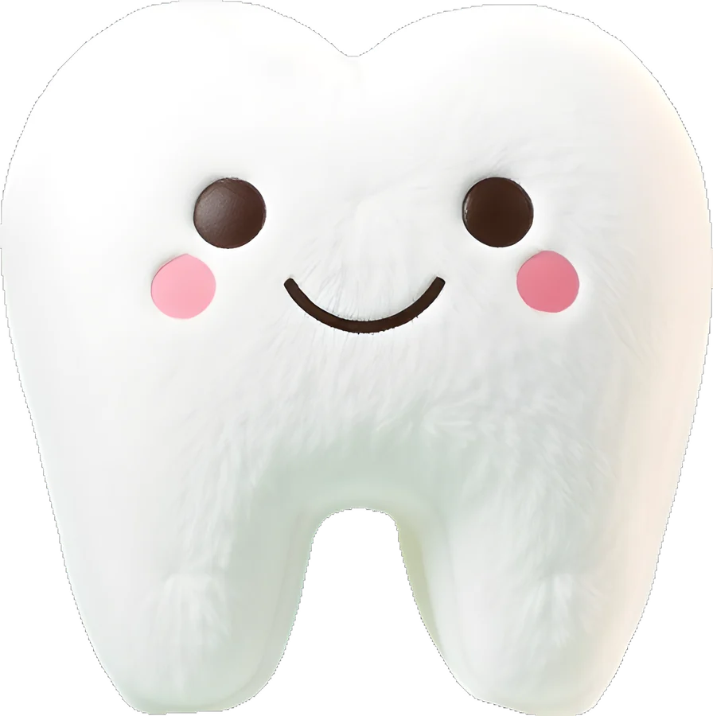
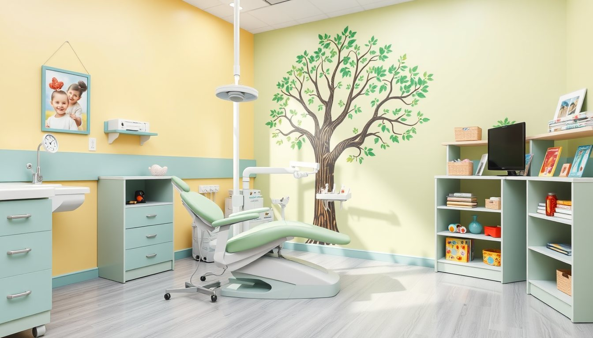
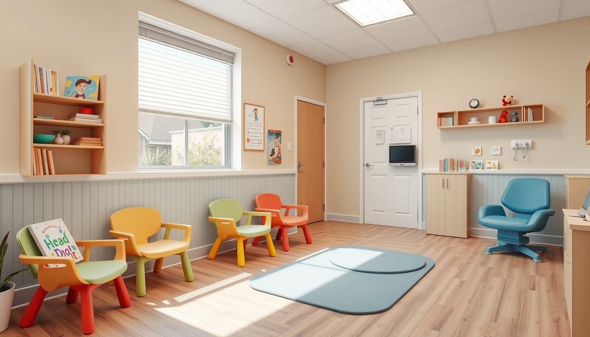
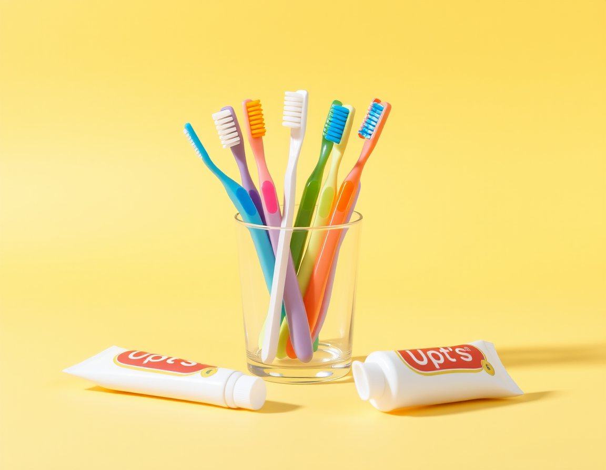

İlk seansta hiçbir işlem yapmıyoruz; sadece tanışıyor, koltuğa oturuyor, aletlere dokunuyoruz. Çocuğunuz hazır olduğunda başlıyoruz.

Merhaba! 👋 Bugün sadece tanışıyoruzHer çocuk farklı. Adımlar arasında ne kadar zaman geçeceğine birlikte karar veriyoruz.
Bekleme alanında oyun oynarken hekimimiz yanınıza gelir. Çocuğunuz koltuğa oturmak isterse oturur.
Ayna, su tabancası ve hava tabancasını çocuğunuz kendi eline alıp dener.
Dişler birlikte sayılır, gerekirse fotoğraf ve röntgen çekilir.
Bulguları ve evde bakım önerilerini size anlatır, yazılı plan veririz.
Genellikle ilk diş çıktığında ya da bir yaş civarında ilk kontrol önerilir.
Fissür örtücü ve flor uygulamalarının çocuğunuza uygun olup olmadığını muayenede değerlendiririz.
Çocuğunuz kendi fırçalasa da 7–8 yaşına kadar bir yetişkinin kontrol etmesi önerilir.
“Acımayacak” yerine “Hekim dişlerini sayacak” gibi olumlu ve somut cümleler kurun.
Evde oyuncak bebeğin dişlerini birlikte sayarak ziyareti canlandırın.
Randevuyu çocuğunuzun dinlenmiş olduğu bir saate, tercihen sabaha alın.



İlk diş çıktıktan sonra her yaştan çocuğu kabul ediyoruz. Ergenlik dönemine kadar takip edebiliyoruz.
Evet. Özellikle ilk ziyaretlerde ebeveynin yanında olması çocuğu rahatlatır.
Hiçbir işlemi zorla yapmıyoruz. Gerekirse birkaç tanışma seansı yapıyor, hazır olduğunda devam ediyoruz.
Düşme, kırık diş ya da şiddetli ağrı durumunda lütfen önce telefonla arayın.
Formu bırakın, aynı gün sizi arayalım. Hafta içi 09:00 – 18:00, cumartesi 10:00 – 14:00.